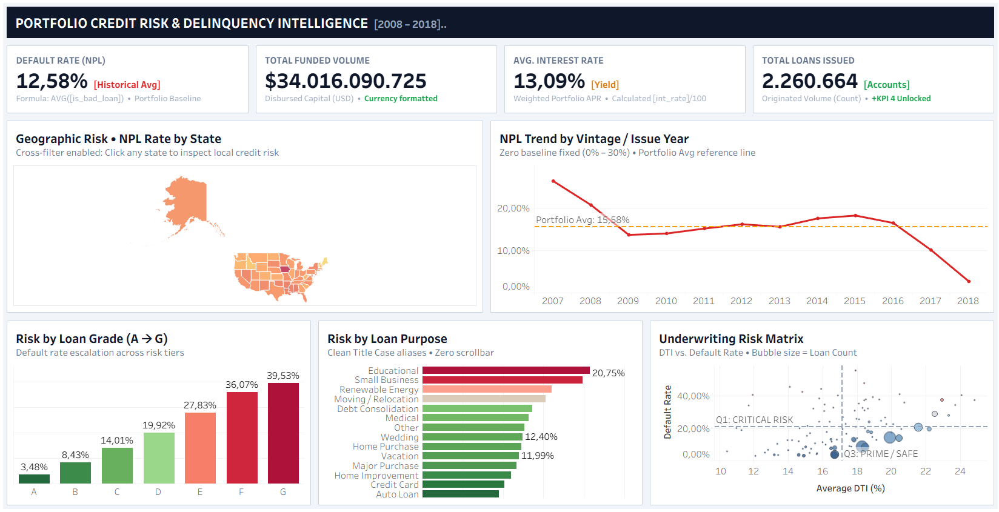

Portfolio Credit Risk & Delinquency Intelligence
Executive risk dashboard analyzing $34.01 Billion in funded loan volume across 2.26M accounts. Tracks default rate (NPL) trends by issue year, loan grade risk escalation (Grades A to G), state-by-state delinquency maps, and DTI underwriting matrices.
$34.01B
Funded Volume
12.58%
Avg Default (NPL)
2.26M
Loan Accounts
Tableau Desktop
Credit Risk Analysis
KPI Design
Cross-Filtering